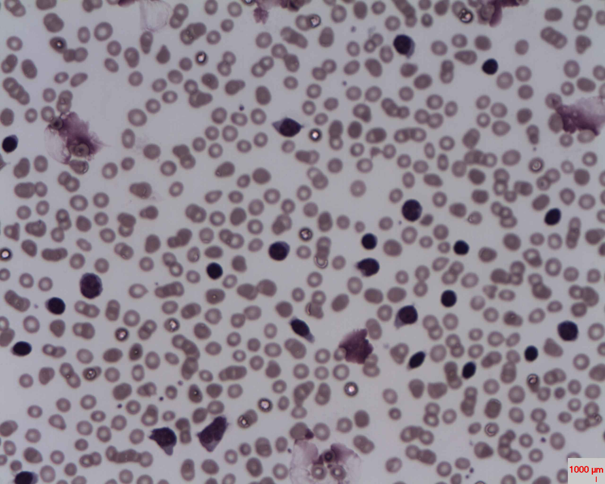

Find the purple nucleated cells among the pink red cells. Most of the visible lymphocyte is nucleus.
Dense nuclear material
CLL cells often have condensed, clumped chromatin and only a thin rim of cytoplasm.
A repeated appearance
Several similar-looking lymphocytes form a pattern worth investigating. Similar appearance alone cannot prove that the cells belong to one clone.
Stains, magnification, and sample preparation differ between photographs. Compare features, not on-screen cell sizes.
A second field / a familiar clue
When a lymphocyte smudges.
REAL MICROSCOPY / SMUDGE CELLS

CLL with lymphocytosis and smudge cells. Compare the intact dark lymphocytes with the wider, smeared purple material. This is a separate case from the first photograph.
Look near the left and right edges of the photograph for spread-out purple nuclear material. More examples appear lower in the field.
Why does this happen?
Fragile lymphocytes can break while the blood film is being spread on the slide. Their nuclear material leaves a smudge instead of an intact cell.
A clue—not a diagnosis by itself.
Smudge cells are common in CLL, but can occur in other settings. The laboratory combines morphology, counts, and flow cytometry.
The photographs use different magnifications. Compare the cell features rather than their on-screen size.
The biology
What is happening?
Altered signaling supports abnormal B-cell survival and growth. CLL is not simply a bloodstream full of rapidly dividing blasts: mature-looking cells can persist, while proliferation also contributes to the population.
The accumulating cells do not provide normal immune protection. As disease progresses, blood production and immune function can be affected. The course varies, and CLL often develops more slowly than an acute leukemia.
From the microscope to the laboratory
Flow cytometry helps identify a clonal B-cell population and its protein pattern. The absolute B-cell count, clinical context, and other findings help distinguish CLL from related conditions.
Pause & think: What are “smudge cells”?
Fragile cells can break as a blood film is made, leaving streaks of nuclear material. These smudge cells are common in CLL, but are a preparation effect and are not specific enough to diagnose it alone. The second photograph above shows examples alongside intact lymphocytes.